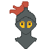
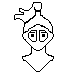
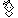
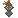

Proposal for Emoji: KNIGHT
Submitters: ***** ; *****
2021-05-03
   1 Identification
A CLDR short name :
KnightB Other keywords :
medieval | chivalry2 Images
License
The sample images and the sample font included in this proposal were created by me and me alone.
As such I own all IP Rights (as defined in the Emoji Proposal Agreement & License) in the Proposed Emoji.
I hereby declare that the Unicode Consortium and its members are granted the right to use,
edit and redistribute these contents in any way they want without restriction.
*****
3 Category
People & Body > person-fantasy > after woman supervillain (before mage)Selection factors — Inclusion
A Compatibility. Are these needed for compatibility with frequently-used emoji in popular existing systems, such as Snapchat, Twitter, or QQ?
NoB Usage level. (See questions below) Measures that can be presented as evidence include the following:
Frequency. Is there a high frequency of use?
Since knight is a common family name in order to disambiguate it I used "Knight Sword" in my searches which may exclude a lot of relevant results.B.1.a Google Search

B.1.b Bing Search
Bing is strangely conservative with the number of results it returns.
B.1.c Google Video Search

B.1.d Google Trends: Web Search

B.1.e Google Trends: Image Search

Multiple usages. Does the emoji have notable metaphorical references or symbolism? This does not include puns.
It is used in the following idioms in English : knight in shining armor / knight of the road / white knightThe knight is a historical character from the Middle Age. It is one of its symbol. It can also represent the values of chivalry such as honour and bravery.
In fantasy universes the knight can represent human characters (as opposed to other fantasy characters such as elves 🧝 or wizards 🧙)
As of 2021-05-03, 137 fictional knights have a wikipedia page https://en.wikipedia.org/wiki/Category:Fictional_knights
The word 'knight' is a source of inspiration for popular fictional characters who are not typical medieval knights such as Dark Knight (Batman) or Jedi Knight (Star wars).
Use in sequences. Can the emoji be used in sequences?
One can use white ⚪ + knight or black ⚫ + knightIt could also be used with other characters :
🤴 👸 + knight to represent the king, the queen and their knight
🧝 🧙 + knight who are three of the main fantasy characters
Breaking new ground :
Yes.*****' hobby is to write stories using emoji and whenever he needs to represent a knight the only solution he has is to use 💂
It can be argued that the knight is already represented as the chess knight ♘ but it is only circumstantial.
Emojis convey meaning through images and using a horse to represent a human wearing an armour is not very intuitive.
In addition, people not familiar with chess would not understand the meaning of a message using the chess knight emoji to represent a knight.
Last, using the chess knight would not work in other languages. ***** personally knows that it would not work in French.
The Queen for instance has three representations depending on the context in which it is used : ♕ 🂭 👸
One could also argue that a knight could be represented as ⚔️ + 🧔 but that is not obvious. Not every man holding a sword is a knight.
As an example it is very unlikely that someone would interpret the following sequence ⚫ + ⚔️ + 🧔 as 'the Dark Knight' without giving it a lot of thought.